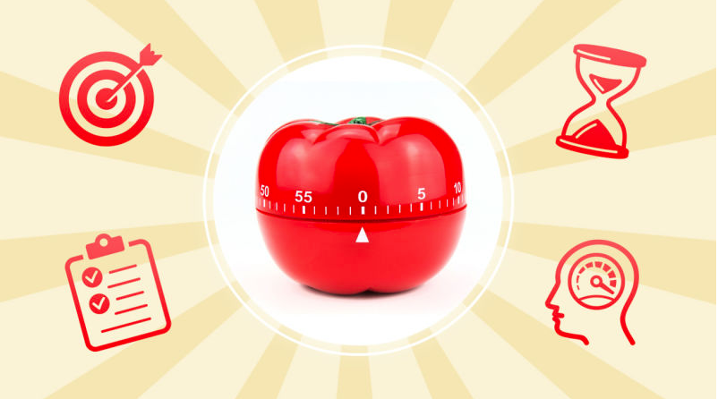

The Pomodoro Technique can help you power through distractions, hyper-focus, and get things done in short bursts, while taking frequent breaks to come up for air and relax. Best of all, it's easy. If you have a busy job where you're expected to produce, it's a great way to get through your tasks. Let's break it down and see how you can apply it to your work.